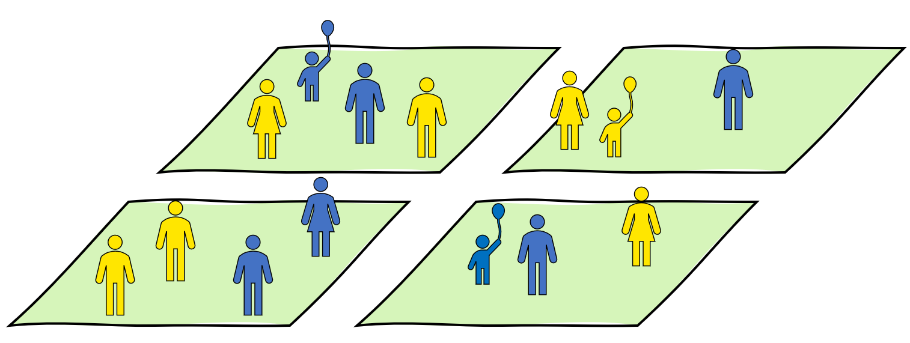
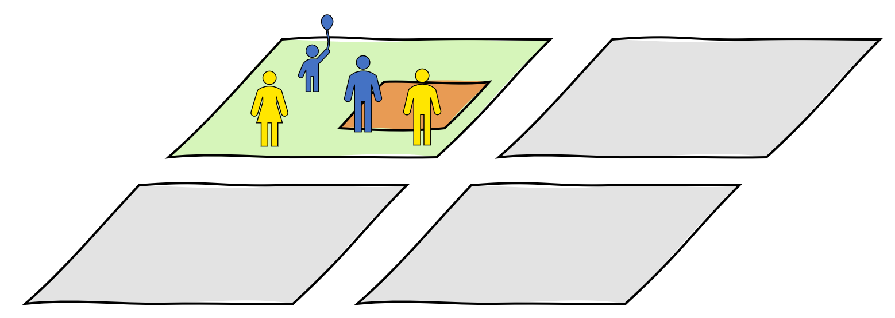

In this article, we’re going to show you how to pre-process your
microdata and control tables using the {PopulationSynthesiser} package,
then use the mlfit package generate synthetic population
data. We’ll use the Australian Census 2016 data as an example. After we
have generated the synthetic population, we’ll use the
postfit_* functions to convert the synthetic population
into a format that can be used by ActivityGenerator.
We refer to this format the ‘CVISTA’ format, which stands for
‘Close-enough to VISTA’.
Before we get started!
In the following example, we will be using a few other R packages
wasn’t shipped with your R program, they provide useful functions for
transforming and visualising data. So make sure you have installed all
these following packages using
install.packages("<packge-name>").
-
dplyrfor summarising data in a data.frame. -
sffor working with spatial data. -
mapviewfor plotting spatial data.
and of course we will need this package,
PopulationSynthesiser as well. However, installing this is
a bit different as the package is not yet officially on CRAN. Please
follow the ‘Installation’ section on the README page to install the
package.
Loading the datasets into R
We should now have 2 person control tables, 1 household control
table, and 1 microdata. Let’s import all of them into R. We can use
these functions to read them into R. Notice that, in
read_census_microdata() you have to state the
census_year of your microdata and the names of the columns
that you would like to select in select.
census_year helps the package to correctly identify the
geographical boundary variables in the microdata. select is
optional, but when stated it can help to reduce the time it takes to
import the microdata.
library(PopulationSynthesiser)
microdata <-
read_census_microdata(
person_file = "datasets/Census2016_CSV/BCSF16_person_new.csv",
family_file = "datasets/Census2016_CSV/BCSF16_family.csv",
dwelling_file = "datasets/Census2016_CSV/BCSF16_dwelling.csv",
census_year = "2016",
select = c("regucp", "agep", "mstp", "sexp", "nprd", "occp", "rlhp")
) %>%
create_fitting_sample()
person_control_1 <-
read_census_tablebuilder("datasets/person_control_1.csv") %>%
create_fitting_control()
person_control_2 <-
read_census_tablebuilder("datasets/person_control_2.csv") %>%
create_fitting_control()
household_control_1 <-
read_census_tablebuilder("datasets/household_control_1.csv") %>%
create_fitting_control()Here are the datasets that we have just loaded into R. Note that, we are not printing out the microdata as is because no ABS microdata should never be shared in its raw form1.
library(dplyr)
microdata %>%
dplyr::mutate_if(is.character, as.factor) %>%
summary()
#> abshid absfid abspid agep
#> Min. : 1 Min. : 1 Min. : 1 30-34 years: 16781
#> 1st Qu.:23964 1st Qu.: 25630 1st Qu.: 58881 25-29 years: 16488
#> Median :47087 Median : 50352 Median :117651 40-44 years: 15868
#> Mean :47324 Mean : 50629 Mean :117686 45-49 years: 15692
#> 3rd Qu.:70473 3rd Qu.: 75529 3rd Qu.:176656 35-39 years: 15378
#> Max. :94988 Max. :101523 Max. :235408 50-54 years: 15173
#> (Other) :136873
#> mstp occp
#> Divorced :16489 Not applicable :125813
#> Married :91167 Professionals : 23665
#> Never married :65731 Clerical and Administrative Workers : 14522
#> Not applicable:43016 Technicians and Trades Workers : 14461
#> Separated : 6170 Managers : 13754
#> Widowed : 9680 Community and Personal Service Workers: 11651
#> (Other) : 28387
#> regucp rlhp sexp
#> Min. : 1.00 Husband, Wife or Partner:97510 Female:118040
#> 1st Qu.:14.00 Child under 15 :40180 Male :114213
#> Median :27.00 Non-family member :27629
#> Mean :27.38 Lone person :20387
#> 3rd Qu.:41.00 Non-dependent child :13171
#> Max. :57.00 Dependent student :10794
#> (Other) :22582
#> nprd
#> Five persons :27253
#> Four persons :51121
#> Not applicable:20266
#> One person :21789
#> Six persons :17280
#> Three persons :39003
#> Two persons :55541
head(person_control_1)
#> sa2 sexp mstp count
#> 1: 118021569 Male Never married 3243
#> 2: 118021569 Male Widowed 125
#> 3: 118021569 Male Divorced 431
#> 4: 118021569 Male Separated 159
#> 5: 118021569 Male Married 2671
#> 6: 118021569 Male Not applicable 1337
head(person_control_2)
#> sa2 occp count
#> 1: 118021569 Managers 1618
#> 2: 118021569 Professionals 3740
#> 3: 118021569 Technicians and Trades Workers 850
#> 4: 118021569 Community and Personal Service Workers 858
#> 5: 118021569 Clerical and Administrative Workers 1184
#> 6: 118021569 Sales Workers 656
head(household_control_1)
#> sa2 nprd count
#> 1: 118021569 One person 1861
#> 2: 118021569 Two persons 2538
#> 3: 118021569 Three persons 1139
#> 4: 118021569 Four persons 879
#> 5: 118021569 Five persons 252
#> 6: 118021569 Six persons 48Synthesise the population
We are now going to create fitting problems, one for each zone. This will help us to sample only the records in the microdata that geographically match our control totals’ zones.
For example, if our microdata contains people from four different zones as shown in the image below.

But our fitting problem is only for a zone (the orange patch) in one of those regions. In this case, each fitting problem will only sample people from the region that contains the zone to be in the reference sample of the fitting problem.

library(mlfit)
geo_hierarchy <- csf_geo2016()
head(geo_hierarchy)
#> regucp sa2
#> 1: 1 101021007
#> 2: 1 101021008
#> 3: 1 101021009
#> 4: 1 101021010
#> 5: 1 101021011
#> 6: 1 101021012
fitting_problems <- ml_problem(
ref_sample = microdata,
field_names = special_field_names(
groupId = "abshid", individualId = "abspid", count = "count",
zone = "sa2", region = "regucp"
),
group_controls = list(household_control_1),
individual_controls = list(person_control_1, person_control_2),
geo_hierarchy = geo_hierarchy
)
#> Creating a list of fitting problems by zone
ml_problem <- fitting_problems[["118021569"]] %>%
prefit_csf_agep_to_age5p()To solve our fitting problem we can use ml_fit() from
the mlfit package. This package provides 4 different
multi-level fitting algorithms: entropy_o, dss, ipu, hipf. See
?mlfit::ml_fit to learn more about the algorithms. Here we
are going to use the famous Iterative Proportion Updating algorithm
(ipu) to solve our fitting problem.
Although, the algorithm did not reach a convergence for this fitting
problem, but the errors are quite small. Priting out
fitting_result to console provides some useful results of
your fitting problem.
fitting_result <- mlfit::ml_fit(algorithm = "ipu", ml_problem)
fitting_result
#> An object of class ml_fit
#> Algorithm: ipu
#> Success: FALSE
#> Residuals (absolute): min = -0.02301994, max = 2.829837
#> Flat problem:
#> An object of class flat_ml_fit_problem
#> Dimensions: 30 groups, 1192 target values
#> Model matrix type: separate
#> Original fitting problem:
#> An object of class ml_problem
#> Reference sample: 2639 observations
#> Control totals: 2 at individual, and 1 at group level
#> Zone: 118021569Now let’s replicate each record in the reference sample by its
fitted/calibrated weights. You can use
mlfit::ml_replicate() to do that. Lookup
?mlfit::ml_replicate to see the definitions of its
arguments.
full_population <-
ml_replicate(fitting_result, algorithm = "trs")
full_population %>%
dplyr::mutate_if(is.character, as.factor) %>%
summary()
#> abshid absfid abspid agep
#> Min. : 1 Min. : 1008 Min. : 1 35-39 years:1945
#> 1st Qu.:1974 1st Qu.: 17458 1st Qu.: 4218 25-29 years:1693
#> Median :3502 Median : 17734 Median : 8436 30-34 years:1393
#> Mean :3756 Mean : 18132 Mean : 8436 40-44 years:1191
#> 3rd Qu.:5568 3rd Qu.: 18090 3rd Qu.:12653 55-59 years:1189
#> Max. :7788 Max. :100648 Max. :16870 45-49 years:1184
#> (Other) :8275
#> mstp occp
#> Divorced :1061 Not applicable :7273
#> Married :5314 Professionals :3730
#> Never married :6853 Managers :1622
#> Not applicable:2670 Clerical and Administrative Workers :1184
#> Separated : 359 Community and Personal Service Workers: 856
#> Widowed : 613 Technicians and Trades Workers : 852
#> (Other) :1353
#> regucp rlhp sexp
#> Min. :10 Husband, Wife or Partner:5898 Female:8886
#> 1st Qu.:10 Non-family member :4450 Male :7984
#> Median :10 Lone person :1848
#> Mean :10 Child under 15 :1243
#> 3rd Qu.:10 Non-dependent child : 949
#> Max. :10 Not applicable : 738
#> (Other) :1744
#> nprd age5p
#> Five persons :1126 35-39 years:1945
#> Four persons :2692 25-29 years:1693
#> Not applicable:3452 20-24 years:1571
#> One person :2034 30-34 years:1393
#> Six persons : 266 40-44 years:1191
#> Three persons :2767 55-59 years:1189
#> Two persons :4533 (Other) :7888
nrow(full_population)
#> [1] 16870
sum(person_control_1$count)
#> [1] 16866Our fitting problem only has 2639 rows in its reference sample. But
once we replicate them, we will have 16870 rows which should closely
matched our control totals, as shown by the output of
dim(full_population).
Post processing
full_population %>%
postfit_add_relationships() %>% # add ids of their partner, father, and mother to each individual
postfit_integerise_age5p() %>% # turn five-year age groups into single year
.[, .SD, .SDcols = patterns("_id$|^age$")] %>%
# select only rows that have a partner, father, or mother using data.table syntax not equal to NA
.[!is.na(partner_id) | !is.na(father_id) | !is.na(mother_id)]
#> ℹ Checking inputs
#> ℹ Creating relationship id fields: `partner_id`, `father_id`, `mother_id`
#> ℹ Joining all members with other members (including self) in the same family household
#> ℹ Adding relationships
#> ℹ Cleaning up
#> ✔ Done
#> partner_id father_id mother_id age
#> 1: 284 NA NA 53
#> 2: 283 NA NA 46
#> 3: NA 283 284 15
#> 4: NA 283 284 12
#> 5: NA 283 284 12
#> ---
#> 7937: NA NA 16524 4
#> 7938: NA NA 16527 4
#> 7939: NA NA 16530 3
#> 7940: NA NA 16533 2
#> 7941: NA NA 16536 0